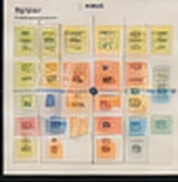
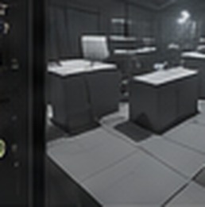
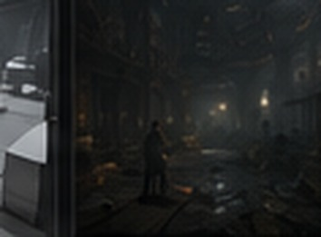

Hollow Graves
Systemic Investigation Horror — Unreal Engine
 ▶
▶Hollow Graves is a first-person investigation-horror game built around player knowledge, environmental discovery, systemic ghost behavior and exploratory level design. This prototype page is deliberately structured as an evidence-driven case study rather than a feature list.
- Role
- Game & Systems Design, Level Design, Narrative Design, UI, Production
- Engine
- Unreal Engine 5
- Tools
- Blueprints, C++, Control Rig, Sequencer, Perforce, Miro
- Status
- In Development — Vertical Slice / MVP
Rebuilding the Astral Ecosystem
The portfolio version will document the original ghost-system limitations, the systemic redesign, the system graph, the technical specification and the route into a scalable C++ / Blueprint MVP.
Prototype Ghost Logic
Capture the architecture as it exists before the refactor: duplicated responsibilities, authoring friction, dependencies and any scaling problems that can be demonstrated honestly.
Astral Ecosystem
Separate reusable concepts such as actor taxonomy, states, perception, resources, territory, persistence and interactions before translating them into implementation architecture.
From Design Intent to Playable Space
A structured pipeline that connects high-level design goals to spatial decisions, player experience and iterative improvement.
Goals & Intent
Create uncertainty while allowing non-linear investigation and multiple information sources.

Gameplay Beats
Map beats and set pieces that guide player flow without forcing a single route.

Spatial Planning
Zone sightlines, attractors, bottlenecks, alternate paths and ghost territory.

Greybox
Test scale, pacing, route clarity and gameplay encounters before polish.

Final / Current
Iterate lighting, dressing and refinement based on testing and readability.
 BEFORE
BEFORERecord the specific readability, information-distribution or pacing problem.
Show the matching change and explain what improved after iteration.
- Routes support player agency.
- Information distribution shapes tension.
- Verticality can create uncertainty.
- Iteration is part of the method.
- Environment communicates story.
Story Through Investigation, Environment and Systems
The narrative is delivered through multiple information channels and player discovery rather than sitting beside gameplay as separate lore.
(The Truth)
(At the Start)
(Possible Conclusions)
Sample In-World Note
To never speak of it.
But it is too damn there.
And it listens.
— R.
Environmental Storytelling
Use annotated screenshots to show how blood trails, damaged equipment, blocked routes, lighting, ghost behavior and prop placement contribute evidence without requiring exposition.
- Spatial evidence
- Written clues
- Audio information
- Behavioral evidence
Narrative Impact
Understanding the truth should change how the player explores, prepares, interprets a ghost, chooses a route or evaluates a ritual. The portfolio should prove that narrative knowledge has gameplay value.
Gameplay System → Production Workflow
A complementary pair: the complex Blueprint clue runtime system and a future designer-facing Editor Utility for authoring and validating clue content.
Blueprint Clue System
Document interaction, content data, UI, clue state, investigation flow and the reusable runtime logic that makes the system work in play.
Clue Authoring Toolkit
Turn real production friction into tools-design evidence: create, inspect, validate and navigate authored clue content from a compact Unreal Editor workflow.